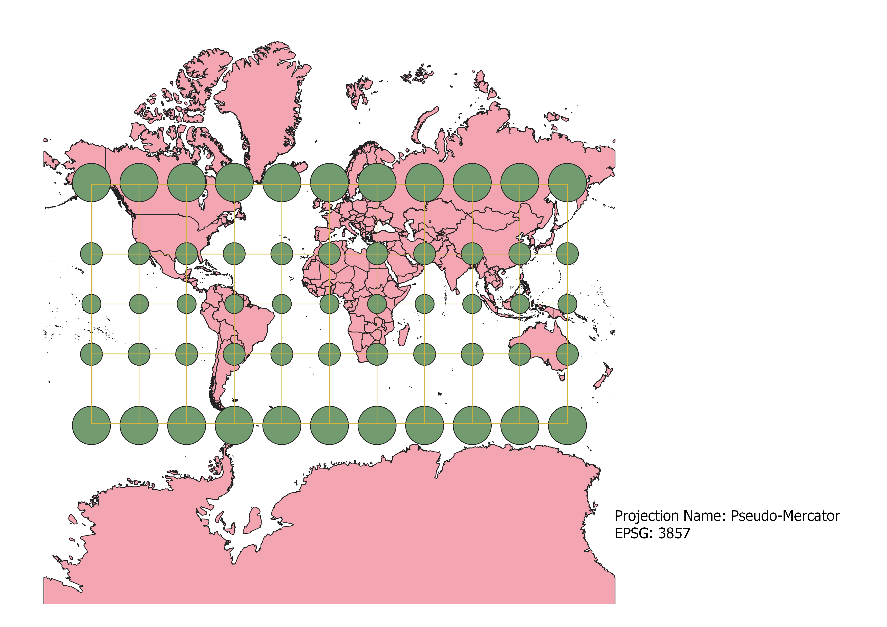
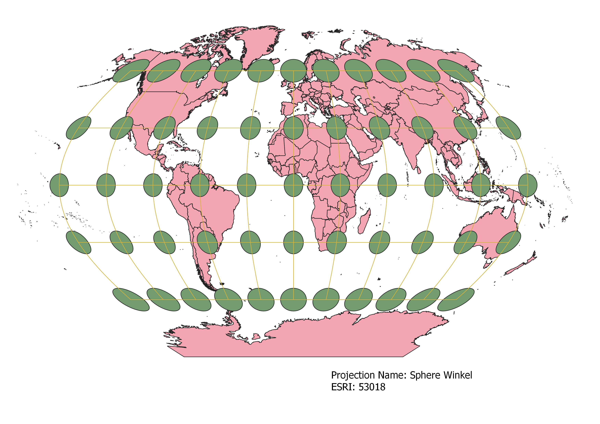
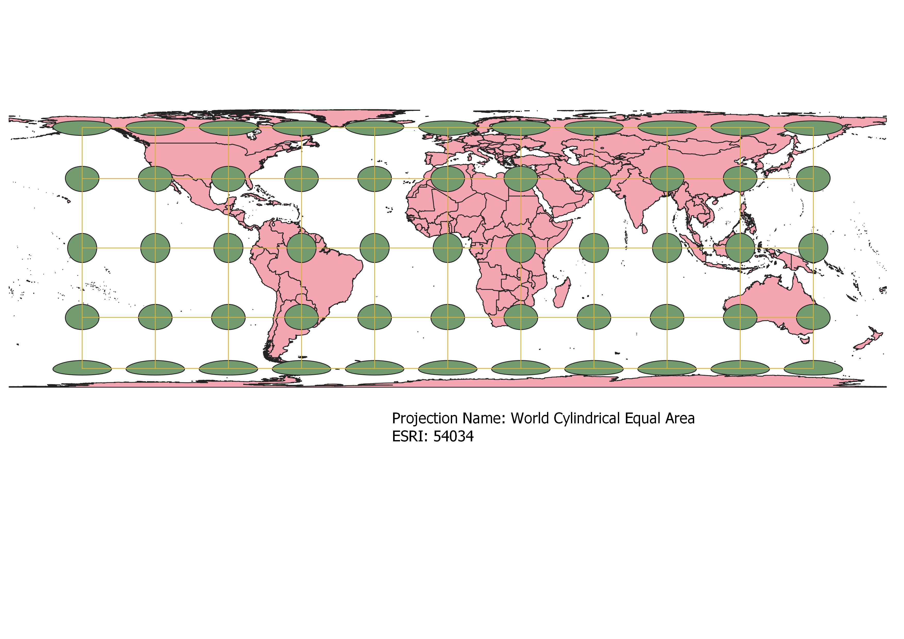
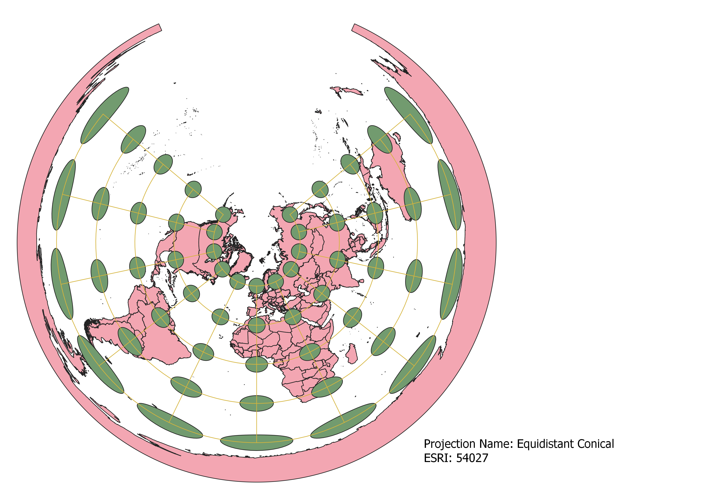
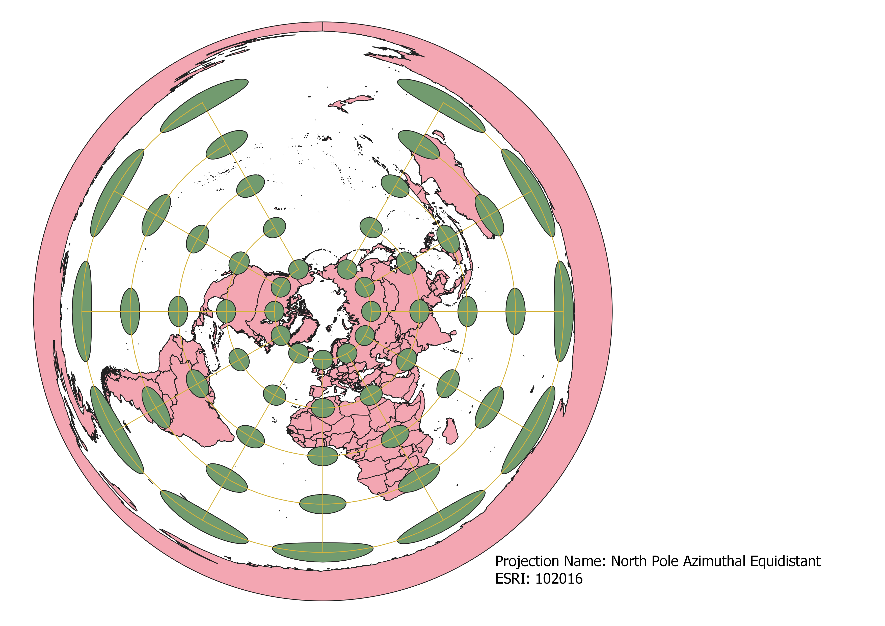
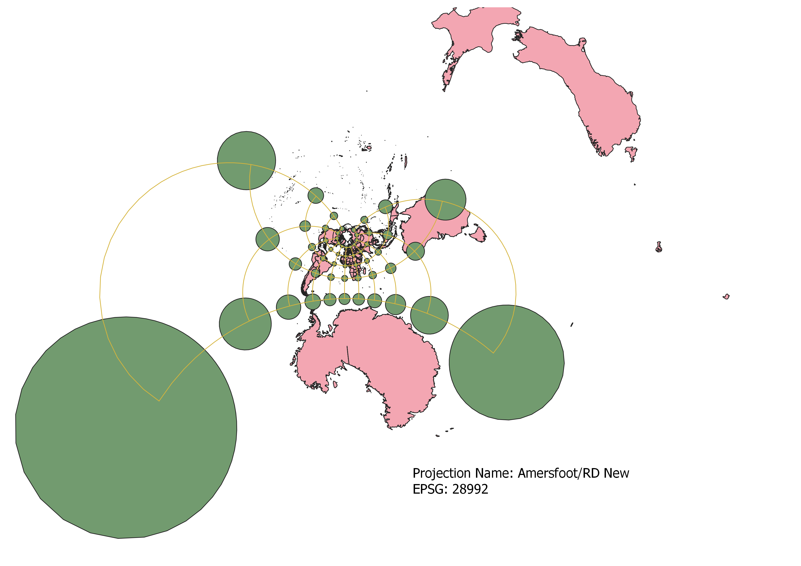
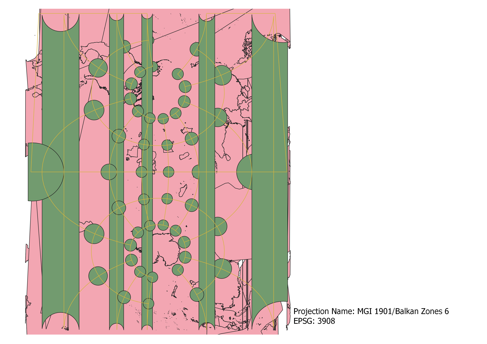

In this project I learned how to display images in different projections
Describe in your own words how you displayed the map in different projections using QGIS
Using QGIS, I displayed the map in different projections by changing the EPSG (sometimes labeled as the ESRI on the maps). Different projections will preserve different aspects of the map, so knowing what you want to show in your map will help you choose which projection is best to use.
WGS84 Projection
This conical map preserves distance but distorts shape and area so North and South are larger than the middle of the map.

Aitoff Projection
This map preserves shape but distorts size, making the corners of the map larger.

Pseudo-Mercator Projection
This cylindrical map preserves shape, area, and distance close to the Equator but the further away, the more that is distorted so the shape and area of the Northern hemisphere and the South Pole are larger.

Sphere Winkel Projection
This map seems to have preserved shape but the area and distance gets distorted the further away from the Equator and the Prime Meridian the map goes.

Cylindrical Equal Area Projection
This cylindrical map preserves distance but stretches the North and the South, so the closer to the Equator the more shape and area have been preserved.

Equidistant Conical Projection
This map preserves distance, primarily in the North, and stretches as it gets to the South Pole.

North Pole Azimuthal Equidistant Projection
This azimuthal map preserves distance from the North Pole, but as you get further away from the North Pole it becomes more distorted.

Amersfoot/RD New Projection
This conical map drastically distorts distance and area, especially the further from the center of the map that you go, but for the most part it preserves shape.

MGI 1901/Balkans Zone 6 Projection
This map is made specifically for the Balkans Zone 6 so it preserves this area, but when zoomed out everything looks distorted.

Data used for this project
Download Natrual Earth 1:10m Cultural Vector